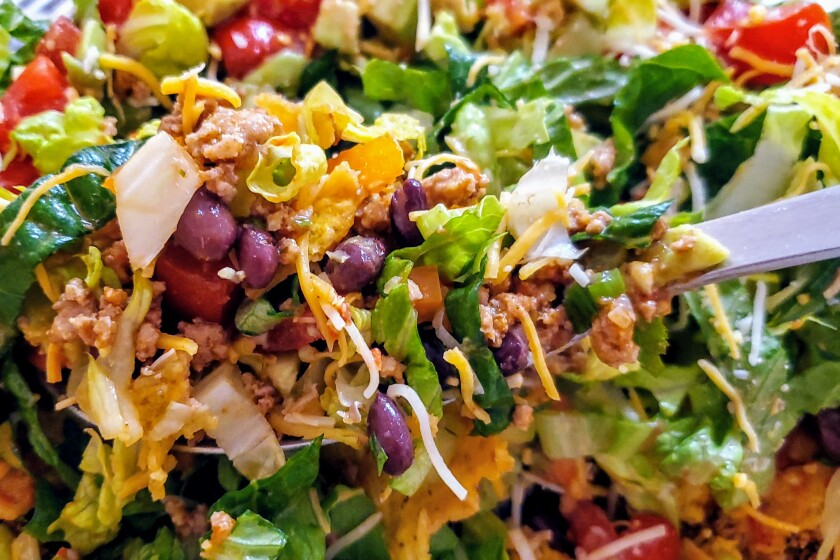

Haystack

Description
A haystack is similar to a taco salad. It is composed of beans, chips,
cheese, and sour cream. Other ingredients like vegetables can be added
if one desires to also.
Ingredients
- beans
- corn chips
- cheese
- sour cream
Steps
- Place chips on a plate and crush them with hands.
- Add beans over the chips.
- Spirnkle cheese over the beans.
- Add a dollop of sour cream.
- Mix together and enjoy.